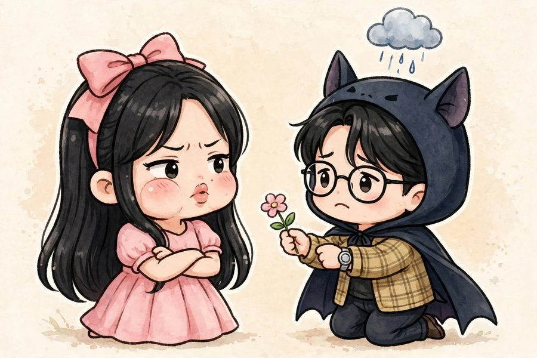
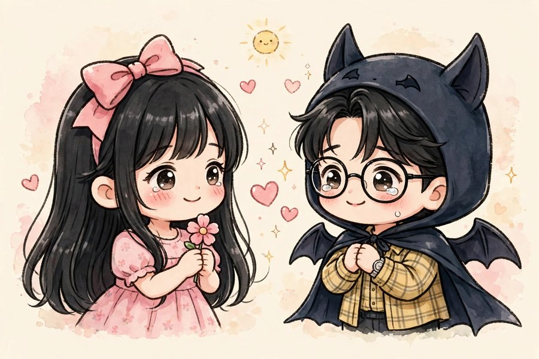
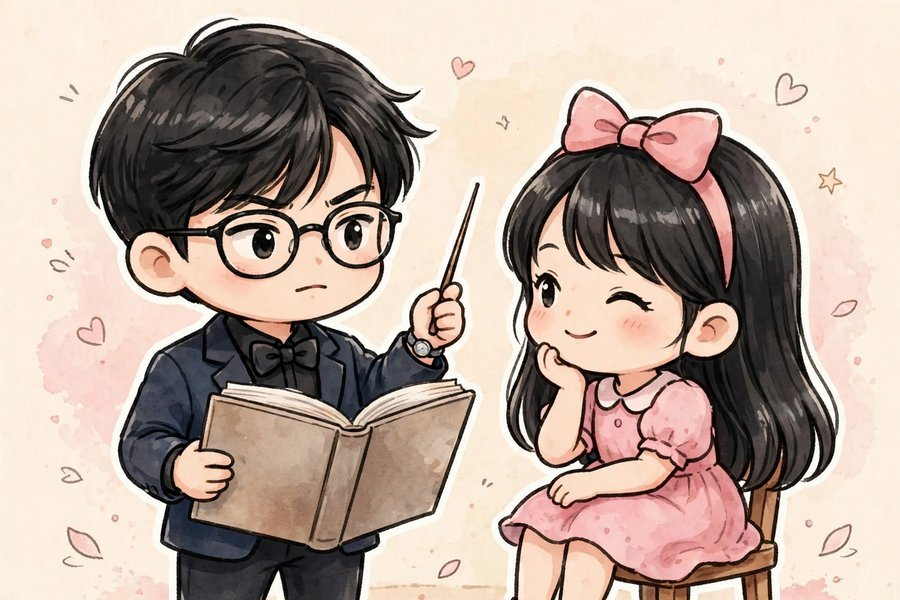
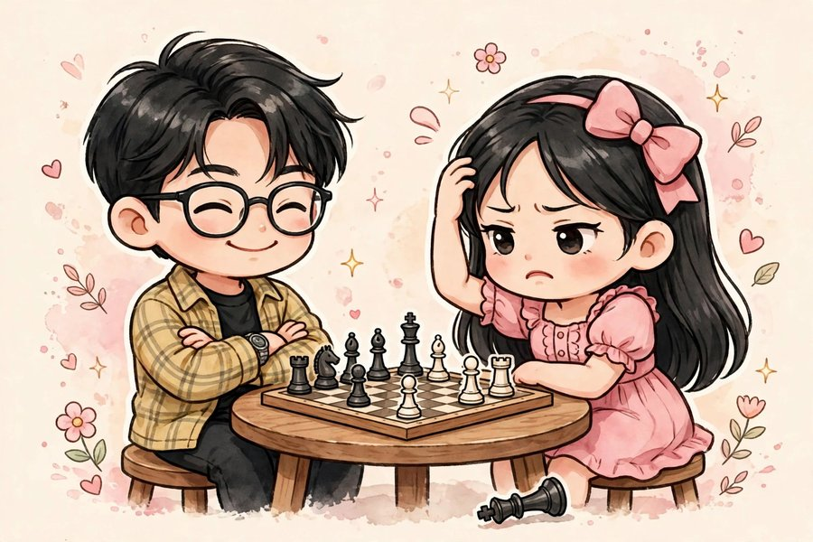
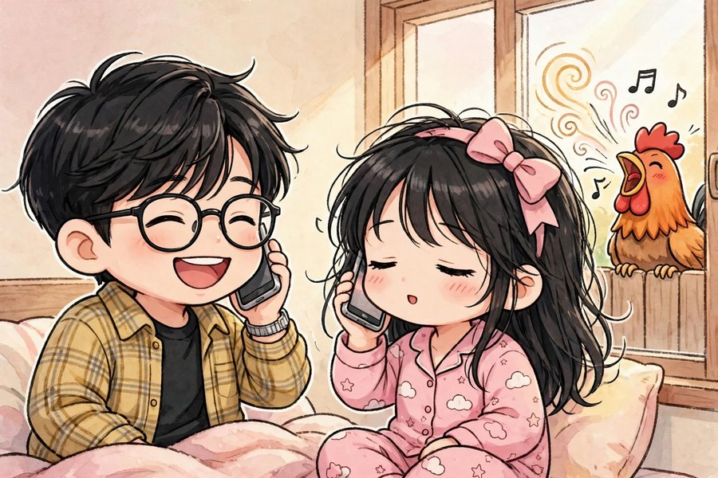
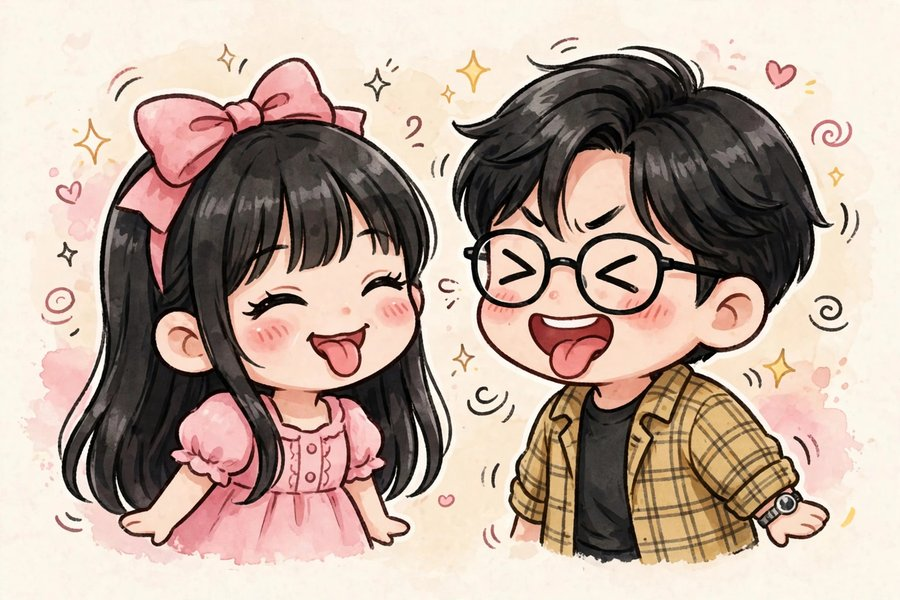

Galeri Kita, yang Bergerak
Tujuh adegan kecil kita, sekarang kususun seperti buku dongeng: satu bab satu adegan, lengkap dengan ceritanya. Ketuk gambarnya untuk memutar, satu adegan saja dalam satu waktu, biar halaman ini tetap ringan dibaca sampai habis.

Waktu Kamu Ngambek
Alkisah, pada suatu hari mendung turun hanya di atas satu kepala. Seorang ksatria berjubah kelelawar berlutut di hadapan tuan putri, mengulurkan setangkai bunga pink dengan seluruh keberaniannya. Konon, hujan di atas kepala yang sedang bersedih hanya bisa berhenti oleh satu hal: bunga yang diterima dengan senyum.

Lalu Baikan Lagi
Dan bunga itu diterima. Matahari muncul lagi, pipi sang ksatria merona, dan dua hati yang tadi berjauhan kembali duduk berdampingan. Dongeng ini tidak punya penjahat; isinya hanya dua orang yang sama-sama tidak betah berlama-lama marahan.

Dosen dan Satu Pendengarnya
Di sebuah kelas yang hanya berisi dua orang, sang dosen membacakan cerita dengan tongkat penunjuknya, serius seperti sedang mengajar seribu mahasiswa. Pendengar satu-satunya duduk menopang dagu, pura-pura mencatat, padahal ia datang memang hanya untuk mendengar suara itu bercerita.

Catur yang Dilama-lamain
Konon ada pertandingan catur yang sengaja dilama-lamain oleh kedua pemainnya, sebab tidak ada yang ingin permainan cepat selesai. Hari itu sang raja di seberang papan rebah juga, dan pemenangnya merayakan dengan dada membusung, sementara lawannya garuk-garuk kepala, mencari langkahnya yang hilang ke mana.

Kartu Uno Berdua
Di meja lain, takdir berbalik. Kartu di tangan sang ksatria bertumpuk seperti gunung yang longsor, sementara tuan putri hanya memegang satu kartu terakhir dan berkedip menang. Pelajaran dari dongeng ini: jangan pernah meremehkan orang yang tersenyum sambil memegang satu kartu.

Teleponan Sampai Ayam Berkokok
Setiap pagi, di sebuah kos yang bertetangga dengan kandang ayam, telepon berdering sebelum matahari tinggi. Di ujung sana ada tawa yang belum sepenuhnya bangun; di ujung sini ada suara mengantuk yang disambut kokok ayam paling rajin sedunia. Mereka bicara terus, sampai lupa bahwa pagi seharusnya singkat.

Waktu Kita Tengil
Dan di antara semua bab yang serius itu, ada satu bab tanpa pelajaran apa pun: dua orang yang saling menjulurkan lidah, tertawa sampai perut sakit, dan menolak tumbuh dewasa untuk sementara. Konon, bab inilah yang paling sering mereka baca ulang.